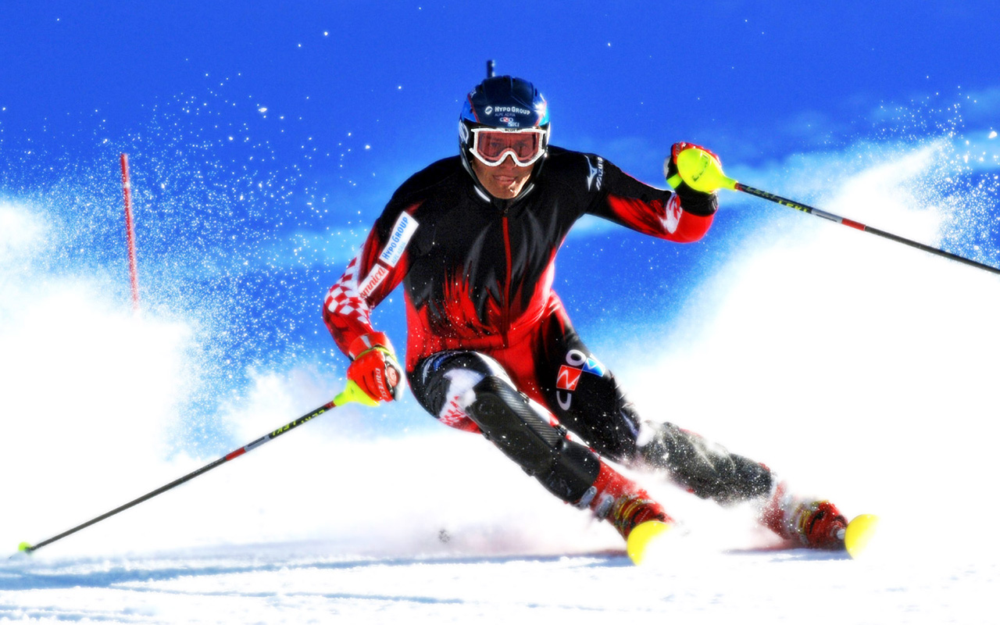
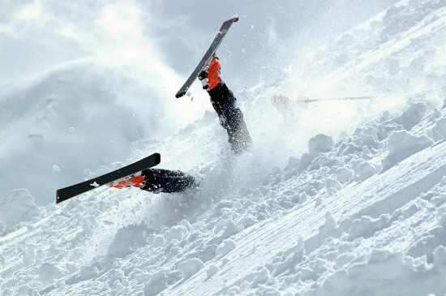

My First Ski Day
My first day of skiing hooked me on skiing. This was despite many less than optimal circumstances.
The dream
The reality
Background
At the time of this story, many moons ago, I was a typical college student in poverty. My brother and I decided to have a joint adventure to visit a good friend of his studying Colorado, and my desire to try out snow skiing.
Since we didn't have much money, we made the long drive from St. Louis. When we arrived, it was too early to knock on our host's door, so spent some amount of time sleeping in the car. Our sleeping accomodations were with some old family friends. As it ended up this family was quite disfunctional. Just another thing we had to deal with due to a lack of money. The two of us also had the joy of sharing a smallish sleeper sofa, which of course has hard pieces poking through a thin mattress at all the wrong places.
The Skiing
Cheapskate scrounger that I was, I had acquired some used (free) ski equipment before the trip. I would pay for this later. My brother and I were banished to the beginner's bunny hill for most of the day. We spent most of this time clumsily tumbling down the slope. Late in the day our cousin, who worked at the ski resort talked us into taking a lift up to the top of the mountain. Once there our cousin quickly realized how pathetic our ski skills were and sped on down the mountain. We spent the rest of our ski day tumbling down the entire mountain.
That night on our sleeper sofa was agonizing. The various bumps and bruises we had acquired during the day burned in pain with every turn in bed. The "free" ski boots I had used were just a bit too small and I ended up losing both big toe nails.
The Addiction
Despite all this, we both realized that we had found a sport that we really loved. On many subsequent ski trips I would arrive when the lifts opened and skiied until they closed. To this day more than thirty years later, there is no vacation I enjoy more that snow skiing